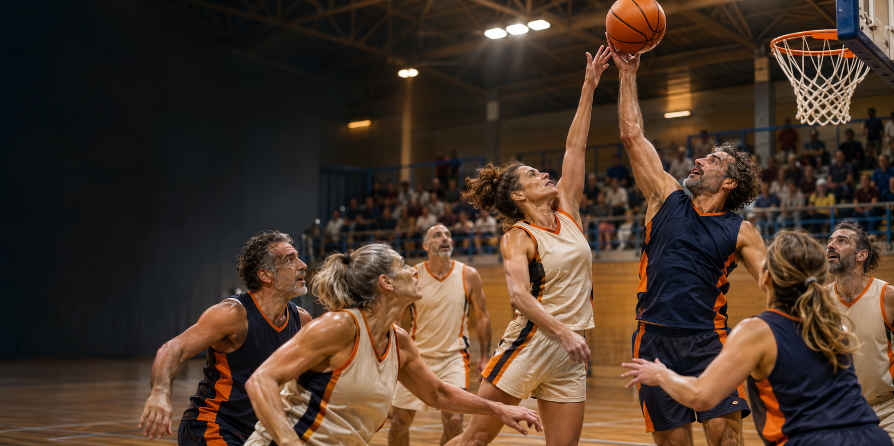

A experiencia segue no parqué
O baloncesto
non ten idade.
Primeiro Día do Maxibasket de Carballo. Unha xornada para competir, reencontrarse e celebrar o xogo.
03XAN
2027
BAIXAR ↓
2027
01 · A XORNADA
Un día enteiro para
xogar como sempre.
Carballo abre a pista á comunidade maxibasket. O 3 de xaneiro, o Pavillón Vila de Noia será punto de encontro de equipos masculinos e femininos de máis de 35 anos.
Competición, amizade e paixón polo balón. A composición dos grupos adaptarase ás inscricións e poderá ser mixta se fose necesario para garantir que todo o mundo xogue.
3 de xaneiro2027 · día completo
Vila de NoiaCarballo · A Coruña
fem. e masc.Equipos mixtos se é preciso
para gozarDetalles proximamente
PRIMEIRA EDICIÓN
DÍA DO
MAXIBASKET
CARBALLO · 03.01.2027

PAVILLÓN
VILA DE NOIA
+35
VILA DE NOIA
+35
02 · INSCRICIÓN
Formade equipo.
Vémonos en Carballo.
A inscrición xa está aberta. Accede ao formulario de Google para rexistrar o teu equipo; as normas de participación publicaranse proximamente.
ImportanteO formato, os horarios e a distribución de categorías confirmaranse unha vez pechadas as inscricións.
03 · COMPETICIÓN
Horarios
en preparación.
A pista está reservada.
Estamos organizando os partidos para aproveitar ao máximo a xornada. Aquí poderás consultar os grupos, os encontros e os resultados en canto se confirme a participación.
04 · ACTUALIDADE
Últimas
novas.
Nace o Día do Maxibasket de Carballo.
O primeiro encontro dedicado ao baloncesto sénior xa ten data: o 3 de xaneiro de 2027.
Ler máis →Publicaremos a ficha de inscrición e as normas.
Ver inscrición →Horarios, grupos e información de servizos.
Ver horarios →CARBALLO
05 · CONTACTO
Falamos
de baloncesto.
Para participar, colaborar ou resolver calquera dúbida:
info@diapequebasket.es607 847 925Organiza Escola Basket Xiria, coa colaboración do Concello de Carballo e entidades vinculadas ao baloncesto galego.